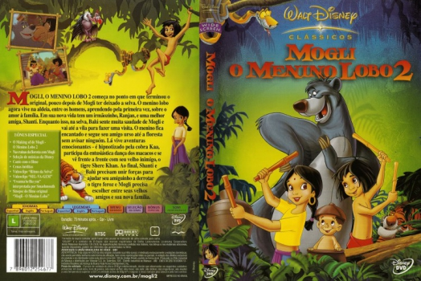

Outro Título:The Jungle Book 2
País:United States, 72 minutos
Idiomas falados:Espanhol, Inglês, Português
Gênero(s):Família, Animação, Aventura
Diretor(s):Steve Trenbirth
Escritor(es):Karl Geurs, Roger S.H. Schulman
Codec:MPEG-2 (DVD)
Número: 5820


Certificado:
Sinopse:
Mogli, uma criança selvagem, cresceu em uma vila rural. Ele foge e volta à selva para ficar com seus amigos animais, como o amável urso Balu. O desaparecimento de Mogli preocupa sua família. Por isso, sua meia-irmã, Shanti, viaja para a selva para encontrá-lo. Mas nem tudo por lá está bem. O velho inimigo de Mogli, o feroz tigre Shere Khan, captura Mogli, Shanti e Balu em um templo antigo.
Elenco:


Tipo de mídia: DVD5,
Legendas: Espanhol, Inglês, Português, Sem Legendas
Alugado: Não
Tela: Anamorphic Widescreen